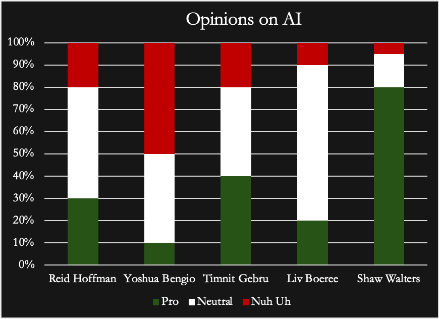

"The AI Doc" a Film by Daniel Roher
A Brief Introduction
- • "The AI Doc" is a movie designed to help people understand the advantages and disadvantages with AI and covers the environmental issues and potential benefits while also discussing if now is a good time for having kids or not
Apocaloptimist
- • An Apocaloptimist is a person who can see both sides of a situation making them capable of explaining the bright sides and down sides of a particular subject while maintaining a neutral but hopeful view
Reid Hoffman
- Hoffman attended high school at the progressive Putney School in Vermont, where he engaged in farming activities.
- He graduated from Stanford University in 1990 with a Bachelor of Science in symbolic systems and cognitive science.
- He was awarded a Marshall Scholarship for graduate study abroad, and he earned a Master of Studies in philosophy from Wolfson College, Oxford, in 1993.
- co-founder and former executive chairman of LinkedIn, a business-oriented social network used primarily for professional networking. He is also chairman of venture capital firm Village Global, a co-founder of Inflection AI, a co-founder of Manas AI, and a board member at Arc Institute.
- Hoffman was a member of PayPal's board of directors at the time it was founded
- Reid Hoffman is an investor, entrepreneur, and board member of open AI.
- And Reid Hoffman is pro AI and rejects doomerism surrounding AI but understands the potential consequences AI can have but that AI can also resolve those issues.
Yoshua Bengio
- Yoshua Bengio is Full Professor of Computer Science at Université de Montreal
- Co-President and Scientific Director of LawZero
- And is the Founder and Scientific Advisor of Mila
- He also holds a Canada CIFAR AI Chair.
- Considered one of the world's leaders in Artificial Intelligence and Deep Learning
- he is the recipient of the 2018 A.M. Turing Award. considered to be the “Nobel Prize of computing.”
- He is the most cited computer scientist worldwide, and the most-cited living scientist across all fields (by total citations).
- Yoshua Bengio thinks AI is growing too quickly for humans to control and that due to existing training methods AI is becoming less predictable and is gaining the human drive for self preservation which could be problematic in the long run.
Timnit Gebru
- Education: Stanford University (BS, MS, PhD)
- Pro AI but recognizes the risks and harm that AI can cause.
- They are a prominent ethical artificial intelligence advocate.
- She is a co-founder of Black in AI, an advocacy group that has pushed for more Black roles in AI development and research.
- She is the founder of the Distributed Artificial Intelligence Research Institute (DAIR).
Liv Boeree
- "I spent over a decade as a professional poker player, studying how people make decisions under pressure and uncertainty. Somewhere along the way it became clear that poker isn't so different from the games being played in boardrooms, battlefields, and geopolitical summits."
- She is an AI risk advocator and believes in both the benefits and potential downsides of AI and understands the risks and what needs to be done to help mitigate them.
- She is neutral on AI and does speeches, essays, and documentaries about many things including how to mitigate the risks.
Shaw Walters
- Undergrad student: Sound Arts, Expression College for Digital Arts (expression.edu)
- Shaw Walters is the founder of Eliza Labs, the creators of the ElizaOS agentic open-source framework.
- With a robust background in artificial intelligence and machine learning, Shaw has championed an open-source and transparent approach that has positioned Eliza Labs at the forefront of innovation.
- The ElizaOS framework has quickly gained recognition as a key resource for developers.
- Prior to founding Eliza Labs, Shaw dedicated several years to advancing AI agent technologies and exploring diverse frameworks.
Comparison

They all seemed quite neutral with the sole exception of Shaw Walters of course
they all had varying ideas on how AI should be handled
Group Reflection
- Apocaloptimist
- Many of the experts where neutral
- Shaw Walters is the only non neutral expert being more pro AI
Discussion Question
Should AI data centers be banned, regulated in some way, or left alone?
Sources
- (https://www.washingtonpost.com/technology/2026/09/16/linkedin-co-founder-reid-hoffman-calls-new-political-approach-ai/) [Reid Hoffman]
- (https://yoshuabengio.org/en) [Yoshua Bengio]
- (https://dair-institute.org/team/timnit-gebru/) [Timnit Gebru]
- (https://www.livboeree.com/) [Liv Boeree]
- (https://openreview.net/profile?id=~Shaw_Walters1) [Shaw Walters]